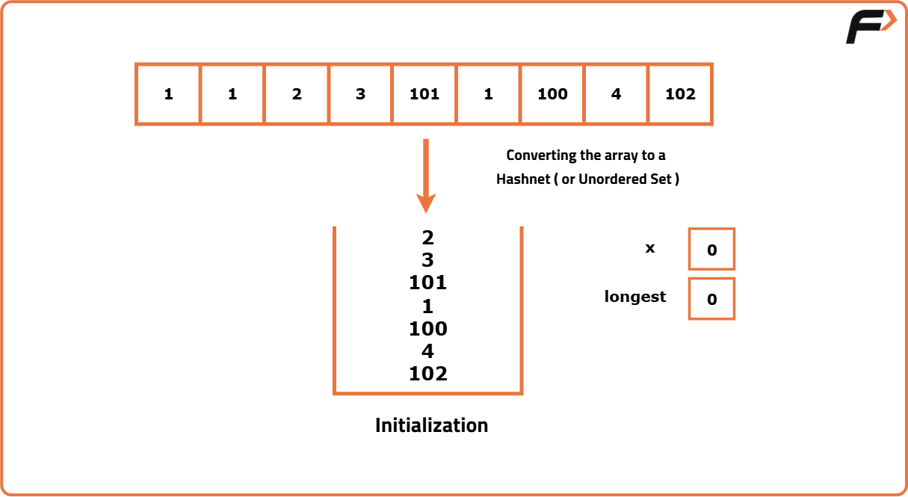
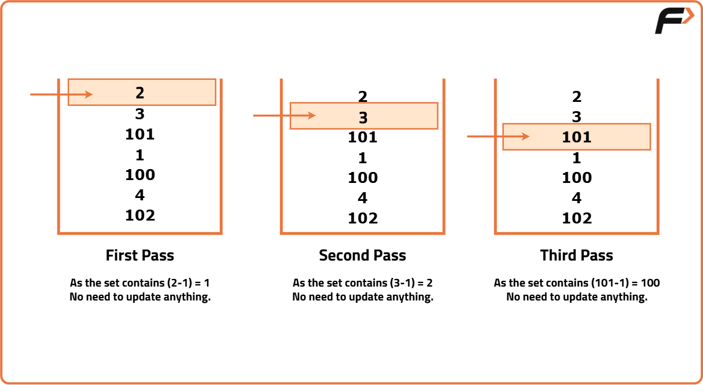
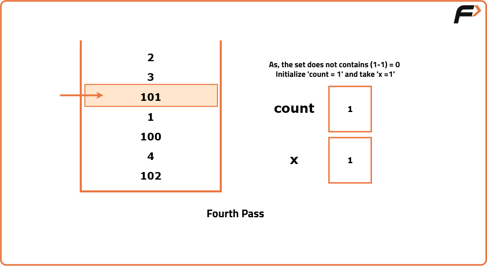
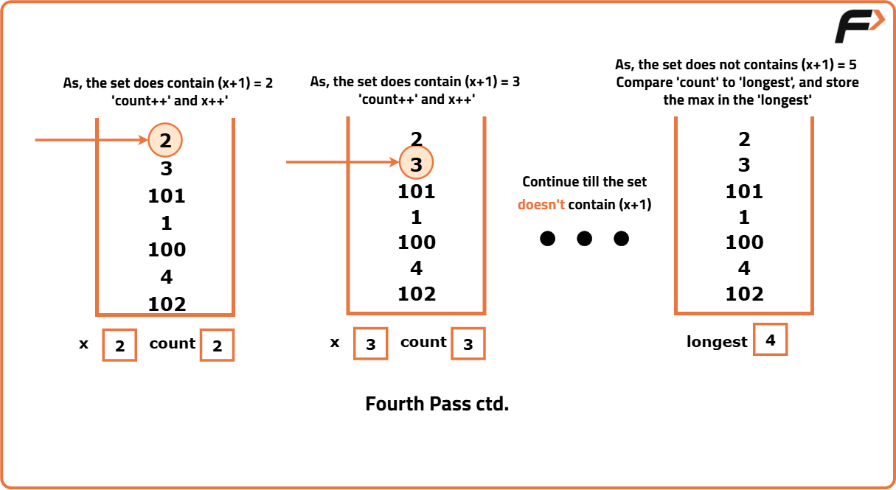
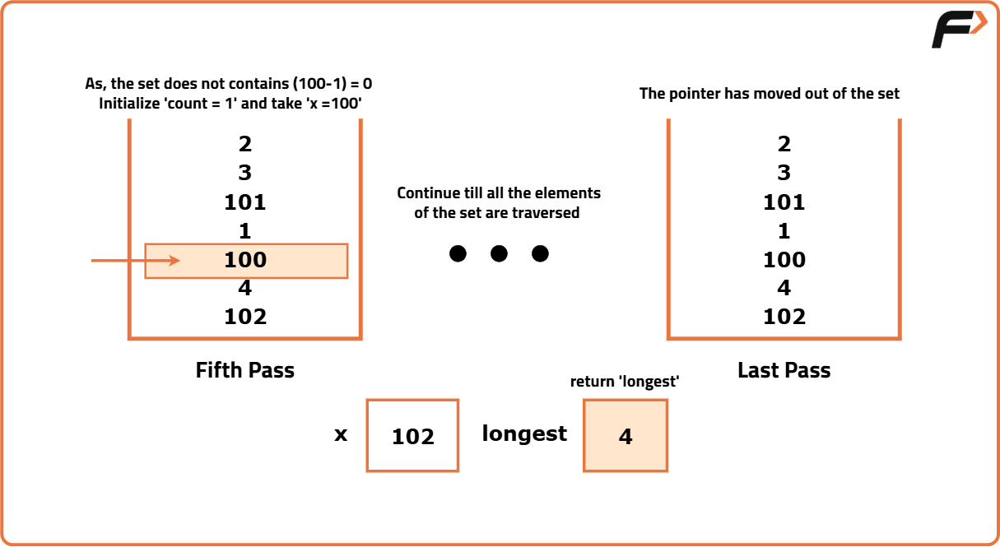

Longest Consecutive Sequence in an Array
Problem Statement:
Given an array nums of n integers.
Return the length of the longest sequence of consecutive integers. The integers in this sequence can appear in any order.
Examples
Example 1: Input: nums = [100, 4, 200, 1, 3, 2] Output: 4 Explanation: The longest sequence of consecutive elements in the array is [1, 2, 3, 4], which has a length of 4. This sequence can be formed regardless of the initial order of the elements in the array. Example 2: Input: nums = [0, 3, 7, 2, 5, 8, 4, 6, 0, 1] Output: 9 Explanation: The longest sequence of consecutive elements in the array is [0, 1, 2, 3, 4, 5, 6, 7, 8], which has a length of 9.
Disclaimer: Here is the practice link to help you assess your knowledge better. It's highly recommend trying to solve it before looking at the solution.
Brute Force
Algorithm
- As you iterate through each number in the array, begin by checking if consecutive numbers like
(x+1, x+2, x+3), and so on, exist in the array. The occurrence of the next consecutive number can be checked by using a linear search. - When you find consecutive numbers, start counting them using a counter. Increment this counter each time you find the next consecutive number in the sequence.
- This counter effectively keeps track of how long the current consecutive sequence is as you move through the array and find more consecutive numbers.
- Dry Run: Please refer to the video for the dry run.
Code
#include <bits/stdc++.h>
using namespace std;
class Solution {
private:
// Helper function to perform linear search
bool linearSearch(vector<int>& a, int num) {
int n = a.size();
// Traverse through the array
for (int i = 0; i < n; i++) {
if (a[i] == num)
return true;
}
return false;
}
public:
// Function to find the longest consecutive sequence
int longestConsecutive(vector<int>& nums) {
// If the array is empty
if (nums.size() == 0) {
return 0;
}
int n = nums.size();
// Initialize the longest sequence length
int longest = 1;
// Iterate through each element in the array
for (int i = 0; i < n; i++) {
// Current element
int x = nums[i];
// Count of the current sequence
int cnt = 1;
// Search for consecutive numbers
while (linearSearch(nums, x + 1) == true) {
// Move to the next number in the sequence
x += 1;
// Increment the count of the sequence
cnt += 1;
}
// Update the longest sequence length found so far
longest = max(longest, cnt);
}
return longest;
}
};
int main() {
vector<int> a = {100, 4, 200, 1, 3, 2};
// Create an instance of the Solution class
Solution solution;
// Function call for longest consecutive sequence
int ans = solution.longestConsecutive(a);
cout << "The longest consecutive sequence is " << ans << "\n";
return 0;
}
Complexity Analysis
Time Complexity: O(n2), where n is the number of elements in the array. This is because for each element, we may need to perform a linear search through the entire array to find consecutive numbers.
Space Complexity: O(1), as we are using a constant amount of extra space for variables.
Better Approach
Algorithm
- Begin by sorting the entire array in ascending order. This step helps group consecutive numbers together, simplifying the sequence detection process.
- Use a loop to iterate through each element of the sorted array.
- Track consecutive sequences by comparing each element
arr[i]with thelastSmallervariable. Ifarr[i] - 1 == lastSmaller, increment the length of the current sequence (cnt) and updatelastSmallertoarr[i]. - Skip the current element if
arr[i]equalslastSmaller, as it's already part of a sequence. - If
arr[i]is greater thanlastSmaller + 1, start a new sequence fromarr[i]by updatinglastSmallertoarr[i]and resetcntto 1. - Throughout the iteration, compare
cntwithlongestand updatelongestto store the maximum sequence length encountered. - Note: Here, we are distorting the given array by sorting it.
Code
#include <bits/stdc++.h>
using namespace std;
class Solution {
public:
int longestConsecutive(vector<int>& nums) {
int n = nums.size();
// Return 0 if array is empty
if (n == 0) return 0;
sort(nums.begin(), nums.end());
// Track last smaller element
int lastSmaller = INT_MIN;
// Count current sequence length
int cnt = 0;
// Track longest sequence length
int longest = 1;
for (int i = 0; i < n; i++) {
// If consecutive number exists
if (nums[i] - 1 == lastSmaller) {
// Increment sequence count
cnt += 1;
// Update last smaller element
lastSmaller = nums[i];
}
// If consecutive number doesn't exits
else if (nums[i] != lastSmaller) {
// Reset count for new sequence
cnt = 1;
// Update last smaller element
lastSmaller = nums[i];
}
// Update longest if needed
longest = max(longest, cnt);
}
return longest;
}
};
int main() {
vector<int> a = {100, 4, 200, 1, 3, 2};
// Create an instance of solution class
Solution solution;
// Function call for finding longest consecutive sequence
int ans = solution.longestConsecutive(a);
cout << "The longest consecutive sequence is " << ans << "\n";
return 0;
}Complexity Analysis
Time Complexity: O(n log n), where n is the number of elements in the array. This is due to the sorting step, which is the most time-consuming operation in this approach.
Space Complexity: O(1), as we are using only a constant amount of extra space.
Optimal Approach
Algorithm
- We will use two variables:
cntto store the length of the current sequence andlongestto store the maximum length found. - First, place all the array elements into a set data structure to allow efficient lookups for consecutive numbers.
- For each element
xthat can start a sequence (i.e.,x - 1does not exist in the set), we follow these steps: - Initialize
cntto 1, indicating the starting element of a new sequence. - Use the set to search for consecutive elements such as
x + 1,x + 2, and so on, to determine the maximum possible length of the current sequence. Updatecntaccordingly. - Compare
cntwithlongestand updatelongestto hold the maximum value:longest = max(longest, cnt). - Finally,
longestwill contain the length of the longest consecutive sequence found in the array.





Code
#include <bits/stdc++.h>
using namespace std;
class Solution {
public:
int longestConsecutive(vector<int>& a) {
int n = a.size();
// If the array is empty
if (n == 0) return 0;
// Initialize the longest sequence length
int longest = 1;
unordered_set<int> st;
// Put all the array elements into the set
for (int i = 0; i < n; i++) {
st.insert(a[i]);
}
/* Traverse the set to
find the longest sequence */
for (auto it : st) {
// Check if 'it' is a starting number of a sequence
if (st.find(it - 1) == st.end()) {
// Initialize the count of the current sequence
int cnt = 1;
// Starting element of the sequence
int x = it;
// Find consecutive numbers in the set
while (st.find(x + 1) != st.end()) {
// Move to the next element in the sequence
x = x + 1;
// Increment the count of the sequence
cnt = cnt + 1;
}
// Update the longest sequence length
longest = max(longest, cnt);
}
}
return longest;
}
};
int main() {
vector<int> a = {100, 4, 200, 1, 3, 2};
// Create an instance of solution class
Solution solution;
// Function call for finding longest consecutive sequence
int ans = solution.longestConsecutive(a);
cout << "The longest consecutive sequence is " << ans << "\n";
return 0;
}Complexity Analysis
Time Complexity: O(n), where n is the number of elements in the array. This is because we traverse each element once to build the set and then again to find the longest consecutive sequence.
Space Complexity: O(n), as we use a set to store the unique elements of the array, which in the worst case can be equal to the size of the input array.